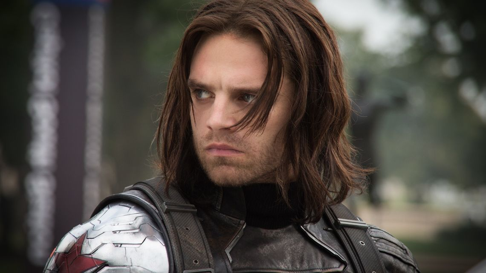

Sebastian Stan sebagai Bucky Barners / Winter Soldier, merupakan salah satu karakter fiktif yang ada pada komik Marvel. Tokoh yang memiliki identitas sebagai Bucky Barnes juga merupakan sosok Captain America pengganti Steve Rogers. Tokoh Bucky diciptakan oleh Joe Simon sedangkan sosok Winter Soldier dicitakan oleh seniman Ed Brubaker dan Steve Epting. Penampilan Bucky Pertama kali muncul pada komik Captain America Comics #1 yang diterbitkan pada bulan Maret 1941. Sedangkan sosok Winter Soldier muncul pertama kali di komik Captain America #1 yang terbit pada bulan Januari 2005.
Memiliki nama lengkap James Buchanan Barnes, Bucky Barnes lahir di Shelbyville, Indiana pada tahun 1925. Dia menjadi yatim piatu karena sang ayah tewas dalam Kamp pelatihan di U.S. Army Lehigh di Virginia sebelum Perang Dunia II terjadi. Karena dirinya yang kecil hidup di Kamp, Barnes menjadi maskot para tentara dan dijuluki Bucky. Saat dirinya remaja, Bucky berteman dengan Steve Rogers yang memiliki tubuh yang kecil. Bucky juga yang memotivasi Steve sehingga mereka berdua masuk dalam pasukan tentara Amerika.
Pada saat menjelang akhir Perang Dunia kedua yakni tahun 145, Bucky dan Steve Rogers mencoba menghentikan aksi dari penjahat Baron Zemo yang didalangi oleh Red Skull. Saat kedua sahabat tersebut sedang menghentikan aksi HYDRA tersebut, Bucky terjebak dan jatuh ke dalam jurang. Jasadnya tak ditemukan dan akhirnya dianggap telah meninggal. Pada tahun tersebut Steve Roger juga mengalami kecelakaan dan tertimbun dalam es selama 50 tahun lamanya.
Pada masa modern, Captain America yang bekerja sebagai agen SHIELD bertemu dengan musuh tangguh bernama Winter Soldier. Saat mereka bertarung, Captain America membuka topeng Winter Soldier yang ternyata adalah sosok dari Bucky Barnes. Namun saat ini Bucky tak ingat apapun soal Steve Rogers karena otaknya dicuci sehingga Bucky lupa semua masa lalu. Bucky pun diberikan serum super yang sama dengan yang digunakan Captain America. Bucky menjadi Winter Soldier akibat ulah Arnim Zola yang merupakan anggota HYDRA. Dengan bersusah payah, Steve Roger Akhirnya bisa menyadarkan Bucky sehingga ia mengingat siapa dirinya. Namun Bucky belum bisa mengampuni rasa kejamnya saat masih menjadi Winter Sodier.
Saat perang Civil War versi komiknya, Captain America dan Iron-Man berselisih terkait pendaftaran identitas para superhero. Saat itu Bucky mendukung Captain America yang menolak mentah-mentah ajakan pemerintah untuk melakukan pendataan para superhero. Dalam insiden tersebut Steve Roger tewas dibunuh oleh Crossbone yang memanfaatkan situasi perang saudara antara para superhero. Bucky pun kemudian menjadi Captain Amerika mengantikan Steve Roger.